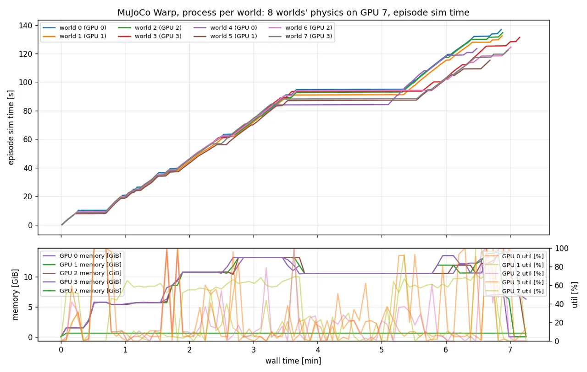

AgiBot Genie G1智元 Genie G1
Differential-drive base, a waist that lifts and pitches, two 7-DoF arms with OmniPicker grippers, head, chest and wrist cameras. Not the Unitree G1.差速底盘、可升降俯仰的腰部、两条 7 自由度机械臂配 OmniPicker 夹爪，头部、胸部与腕部相机。不是宇树 G1。
7 robot embodiments · Data 1.0 · cuRobo · MuJoCo / MuJoCo Warp
Embodied indoor mobile manipulation research: structured scene generation, searchable assets, shared robot interfaces, multi-camera data and benchmark tooling. 具身室内移动操作研究：结构化场景生成、可检索资产、统一本体接口、多相机数据与评测工具。
robot embodiments share the current Robot / Data interfaces 款本体共享当前 Robot / Data 接口
current data contract; LeRobot-v2-inspired, standard loader not yet verified 当前数据契约；受 LeRobot-v2 启发，标准 loader 尚未验证
normalized asset records; 430 low-confidence entries remain for review 条已归一化资产记录；其中 430 条低置信度待复核
frames in the verified G1 full-task regression; not a general success rate G1 完整任务回归中核验的帧数；不是泛化成功率
Illustrated capability overview · Benchmark design in progress
Pipeline流程
Describe a room, get a structured scene candidate with diagnostics, then run a robot task only when the scene and skill path are separately validated. 描述一个房间，得到带诊断信息的结构化场景候选；只有场景和技能路径分别通过验证后，才运行机器人任务。
Human prompt → structured semantic plan / scene graph (rule-based or configurable LLM), tool-based asset retrieval, constraint layout, settling, docking and validation diagnostics.人类提示词 → 结构化语义规划 / 场景图（规则或可配置 LLM）、工具化资产检索、约束布局、静置、停靠位与验证诊断。
The scene graph yields navigate, relocate, transfer, put-in and shelve candidates; predicates come from privileged simulation state and remain separate from visual observations.场景图生成 navigate、relocate、transfer、put-in、shelve 候选；谓词来自特权仿真状态，并与视觉观测保持分离。
Navigation, waist, grasp, carry, place, articulated-door skills, insertion, stance search and gaze; planners are exposed through robot-agnostic contracts. G1 task execution is validated; other embodiments remain in interface / zero-step validation.导航、腰部、抓取、搬运、放置、铰接门技能、插入、站位搜索与注视；规划器通过本体无关契约暴露。G1 已完成任务执行验证，其它本体仍处于接口 / 零步验证阶段。
CPU MuJoCo or GPU MuJoCo Warp; the server batches physics while planning, rendering and data processes remain separate.CPU MuJoCo 或 GPU MuJoCo Warp；物理服务批量推进物理，规划、渲染与数据进程保持分离。
cctv, head and wrist videos, G1's 25-D state and 22-D control, skill stages and logs. The format is LeRobot-v2-inspired; a standard loader is not yet verified.cctv、头部与腕部视频，G1 的 25 维状态与 22 维控制、技能阶段和日志。格式受 LeRobot-v2 启发，标准 loader 尚未验证。
Benchmark tooling is under construction; L1–L6 labels still have separate product and code meanings, with binary outcomes and classified failures planned.评测工具仍在建设；L1–L6 在产品和代码中仍有不同含义，二值结果与失败分类正在规划。
Policies trained on the recorded datasets and evaluated on the benchmark protocol.用录制的数据训练策略，并按评测协议评估。
Capabilities能力
Differential-drive base, a waist that lifts and pitches, two 7-DoF arms with OmniPicker grippers, head, chest and wrist cameras. Not the Unitree G1.差速底盘、可升降俯仰的腰部、两条 7 自由度机械臂配 OmniPicker 夹爪，头部、胸部与腕部相机。不是宇树 G1。
The current G1 microwave regression completed pick, navigation, carry, placement and home: 1,103 frames and four videos were verified. Stance search scores base poses in simulation; the cabinet variant exists but is not validated yet.当前 G1 微波炉回归完成了抓取、导航、搬运、放置和回 home：已核验 1,103 帧与四路视频。站位搜索在仿真中评估底盘位姿；柜门变体已有，但尚未验证。
A recorded eight-world Warp run completed 8/8 episodes. It demonstrates the batched physics path, not a general success rate or per-world speedup; planning and rendering use separate processes.一次记录过的八世界 Warp 运行完成了 8/8 个 episode。它展示的是批量物理路径，不是泛化成功率或单世界加速结论；规划与渲染使用独立进程。
The semantic catalog and default database share one retrieval path across mesh, MJCF, URDF, SDF and USD sources. The current catalog has 1,951 metadata records and 8 image records; 430 low-confidence entries remain for review.语义目录与默认数据库共用一条检索路径，支持网格、MJCF、URDF、SDF、USD 来源。当前目录包含 1,951 条元数据记录和 8 条图像记录，另有 430 条低置信度条目待复核。
Rope objects built with MuJoCo's elasticity plugin and a rope-lift task with a physical pinch and lift, with privileged centreline data per frame. Material parameters are not calibrated yet.用 MuJoCo 弹性插件构建的绳索物体，以及物理夹持、提起的提绳任务，逐帧记录特权中心线数据。材料参数尚未标定。
Every episode can carry head, wrist and cctv videos, a live skill panel, a ghost-trail image, timing logs and the MoMaInf Data 1.0 record. It is LeRobot-v2-inspired, not yet verified with the standard loader.每个 episode 可包含头部、腕部与 cctv 视频、实时技能面板、残影图、带耗时日志和 MoMaInf Data 1.0 记录。格式受 LeRobot-v2 启发，尚未用标准 loader 验证。
Architecture架构
recorded world processes · worker GPUs记录中的世界进程 · 工作 GPU
1 physics server · dedicated GPU1 个物理服务进程 · 独立 GPU
Each world keeps its own interpreter, planner, renderer and recorder. Physics state crosses a small pipe to a batching server, while planning, rendering and data processing remain separate workers.每个世界保留独立的解释器、规划器、渲染器和录制器。物理状态通过小型管道送到批量服务进程，规划、渲染和数据处理仍是独立工作进程。
The diagram is a recorded eight-world configuration, not a fixed hardware requirement. GPU placement, memory and process counts are run-specific.图中是一次记录过的八世界配置，不是固定的硬件要求；GPU 分配、显存和进程数量取决于具体运行。
That experiment completed 8/8 episodes, but it was CPU-bound and did not establish a general per-world speedup. MuJoCo Warp is a batched physics backend, not a claim that the whole pipeline runs on one GPU.该实验完成了 8/8 个 episode，但受 CPU 限制，不能据此得出单世界普遍加速结论。MuJoCo Warp 是批量物理后端，不意味着整条流水线都运行在一块 GPU 上。

Gallery展示
Results结果
The latest validated G1 regression completed the bimanual microwave task: navigation, pick, carry, placement and home. Success still requires the bottle inside and no stability failure (base tilt above 5° for 0.2 s, or 15° and more). 最新核验的 G1 回归完成了双臂微波炉任务：导航、抓取、搬运、放置和回 home。成功仍要求瓶子在微波炉内，并且稳定性监测无失败（底盘倾斜超过 5° 持续 0.2 s，或达到 15° 及以上）。
| Run运行 | Physics物理 | Seeds种子 | Result结果 |
|---|---|---|---|
| Latest G1 full-task regression, 2026-10-14最新 G1 完整任务回归，2026-10-14 | CPU | 1 | success成功 navigation, grasp, carry, place and home; 1,103 frames, four videos导航、抓取、搬运、放置和回 home；1,103 帧，四路视频 |
| 0.5× microwave, randomized bottle pose and robot start0.5 倍微波炉，随机化瓶子位姿和机器人起点 | CPU | 0–15 | 15/16 in one batch; the 16th crashed without a result and succeeded on rerun; max tilt 4.35°（同一批）；第 16 个崩溃、没有结果，重跑后成功；最大倾斜 4.35° |
| Furnished microwave room布置齐全的微波炉房间 | CPU, one process per seedCPU，每个种子一个进程 | 0–7 | 8/8 |
| Furnished microwave room布置齐全的微波炉房间 | MuJoCo Warp, 8 worlds on one GPUMuJoCo Warp，8 个世界在一块 GPU 上 | 0–7 | 8/8 |
| Single episode, 2026-10-11, furnished room单个 episode，2026-10-11，布置齐全的房间 | CPU | 0 | success成功 bottle inside, door at 37.7°, max tilt 0.88°, 1,424 frames瓶子在微波炉内，门开 37.7°，最大倾斜 0.88°，1,424 帧 |
The table mixes dated validation artifacts and is not a unified success rate. Seven-embodiment planning currently has interface and zero-physical-step checks; new embodiments' full grasp, place and home tasks, training and unified evaluation are still unvalidated or planned.表格混合了不同日期的验证产物，不能当作统一成功率。七款本体的规划目前通过接口和零物理步检查；新本体的完整抓取、放置、回 home 任务，以及训练和统一评测仍未验证或在规划中。
Team团队
Since October 2026 the team develops directly on main: small commits that carry their tests and evidence, reviewed after they are pushed. The repository is private; team members can ask the project owner for access.从 2026 年 10 月起，团队直接在 main 上开发：小而清晰的提交，附带测试与证据，推送后由其他成员评审。代码仓库是私有的，团队成员可向项目负责人申请访问权限。